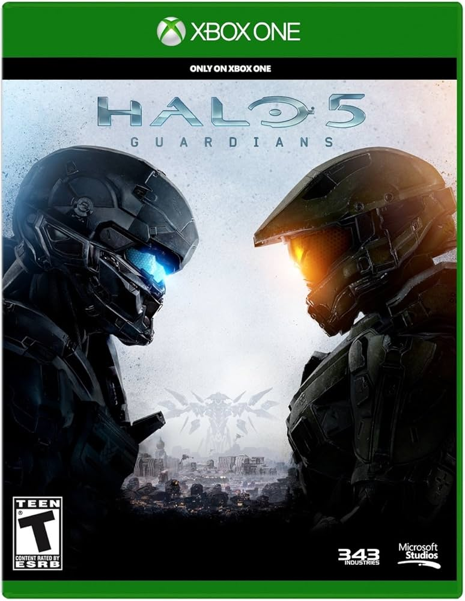

Halo Universe
 Halo 5: Guardians es el segundo juego de la Saga del Reclamador y el undécimo de toda la franquicia. Se convierte en el sucesor cronológico de Halo 4 y sera el predecesor de Halo Infinite. La trama trata sobre la deserción del Jefe Maestro y la caza del mismo por parte de la Oficina de Inteligencia Naval y una amenaza que se encuentra eliminando planetas. Se estrenó el 27 de Octubre de 2015, en exclusiva para la consola Xbox One. Resumen:El Equipo de Asalto Osiris es enviado a Kamchatka para recuperar a la Dra. Halsey de las fuerzas de Jul 'Mdama, quienes la tienen cautiva. Al llegar, descubren que el Covenant está siendo atacado por sus propias fuerzas de Prometeos, que se han vuelto en su contra. Tras eliminar a varias fuerzas enemigas, Osiris embosca a 'Mdama, matándolo y rescatando a Halsey, quien misteriosamente se interesa por las acciones del equipo. Mientras tanto, el Jefe Maestro y el Equipo Azul son enviados a abordar la nave de investigación ONI, *Argent Moon*, que está siendo saqueada por el Covenant. Durante una confrontación, el Jefe Maestro tiene una visión de Cortana y sigue la pista que ella deja, dirigiéndose a Meridian en busca de respuestas sobre su posible supervivencia. Halsey, a bordo de la UNSC Infinity, revela que Cortana ha accedido al "Dominio", una red de información Forerunner, y que su estado ha cambiado. Al llegar a Meridian, Osiris se encuentra con un gobernador IA rampante y un nuevo enemigo, el Warden Eterno, quien protege a Cortana y sus planes. El Jefe Maestro y el Equipo Azul siguen investigando, y Cortana se revela como la líder de un movimiento para controlar la galaxia usando a las IAs y los Guardianes, con la intención de crear un "manto de responsabilidad" bajo su control. Cortana activa un Guardián en el planeta Génesis y comienza a implementar su plan para subyugar a la galaxia. Durante este tiempo, el Equipo Osiris, que sigue a los equipos de Cortana, tiene que enfrentarse a fuerzas del Covenant y Prometeos. Después de varias confrontaciones, Cortana encierra al Jefe Maestro y al Equipo Azul en un Cryptum para evitar que interfieran en sus planes. Con el apoyo del monitor Exuberant Witness, Osiris libera a los miembros del Equipo Azul, quienes se reagrupan con la misión de detener a Cortana. Tras una serie de batallas y la activación de los Guardianes por Cortana, ella pone en marcha su plan de control galáctico, mientras la UNSC Infinity trata de escapar de su influencia. El juego culmina en una confrontación donde Cortana, furiosa, intenta utilizar a los Guardianes para aplastar la resistencia, pero el equipo de Osiris, con la ayuda de Exuberant, logra neutralizarla parcialmente, liberando al Jefe Maestro y a su equipo. El juego termina con Cortana huyendo a través del desliespacio, mientras la lucha por el control de la galaxia sigue en pie. |